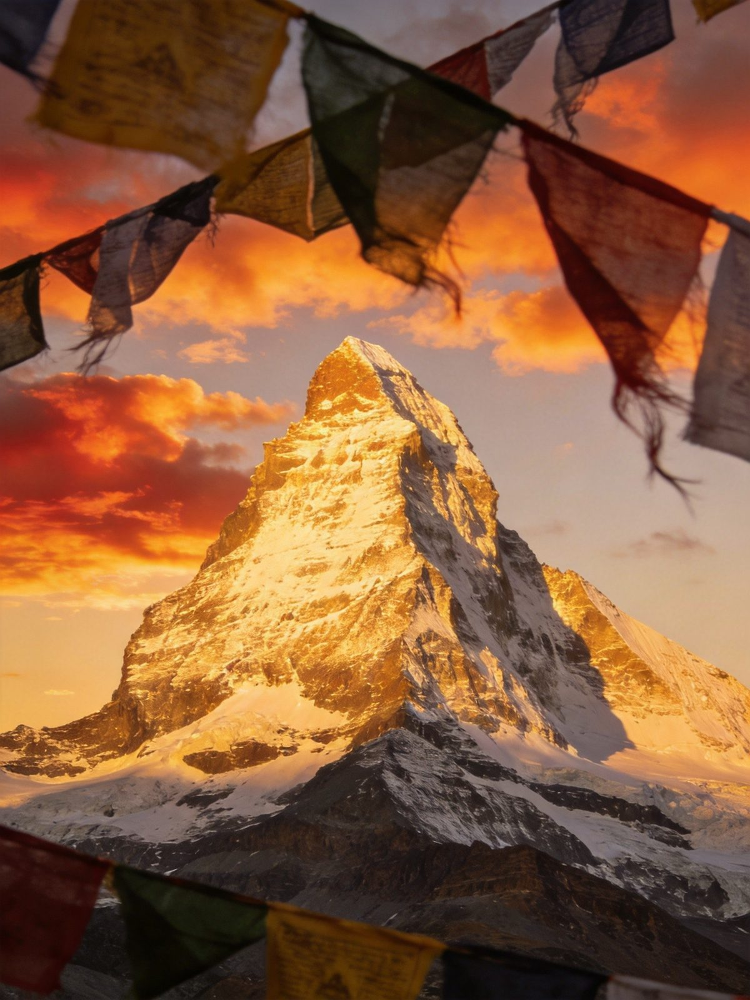
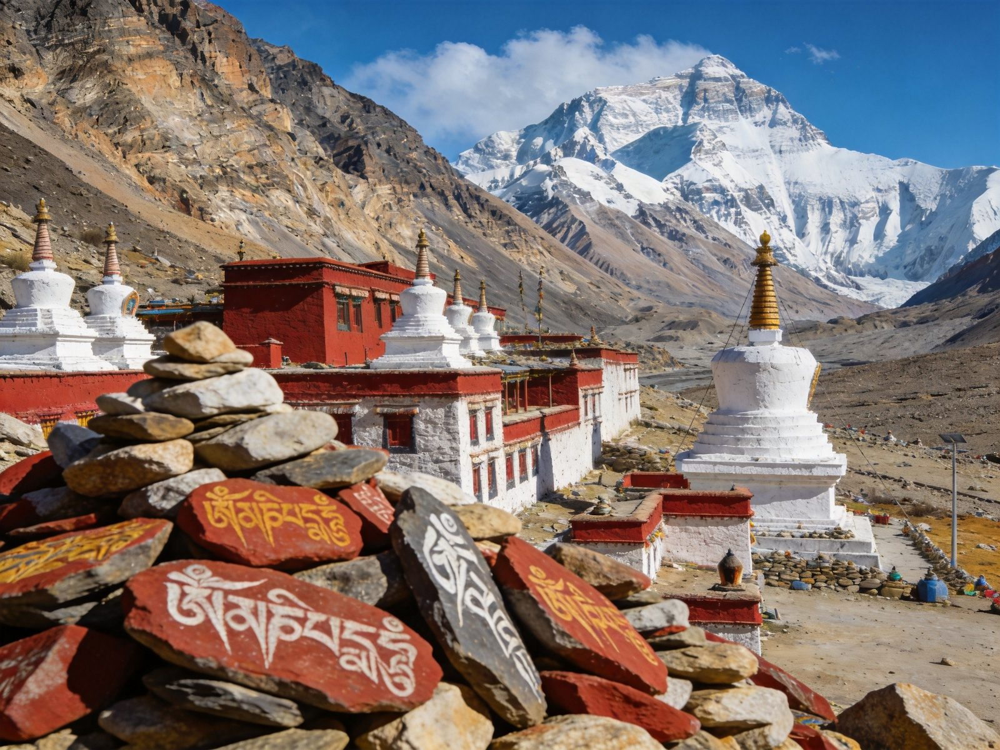
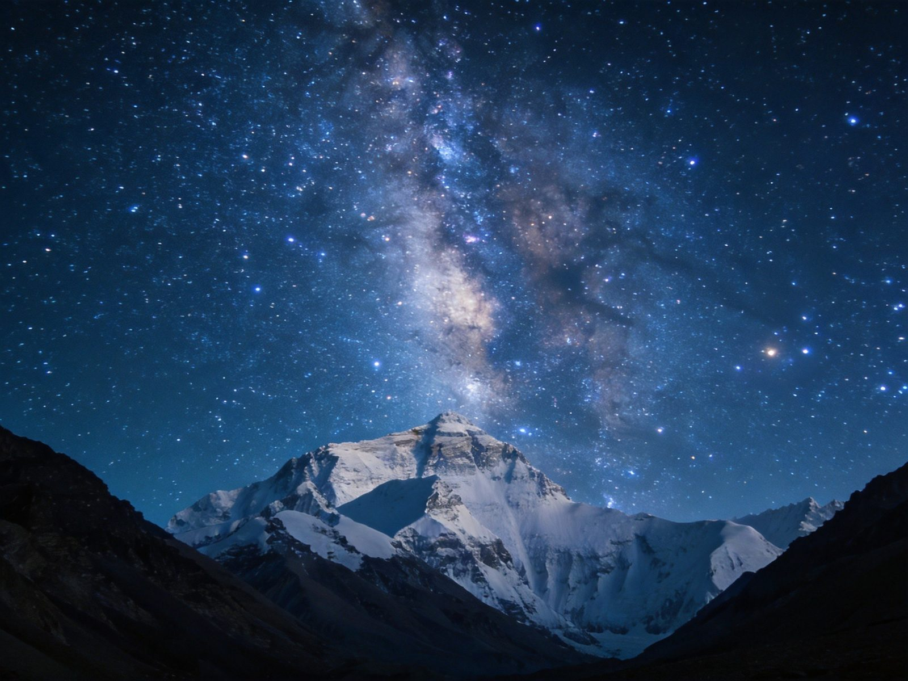

日喀则
珠峰脚下 · 后藏之心
日喀则，藏语"土质最好的庄园"，海拔 3800 米，西藏第二大城市。这里是通往珠穆朗玛的门户、历代班禅驻锡地。扎什伦布寺的金顶、珠峰大本营的日照金山、绒布寺的世界之巅、江孜宗山的古城风韵——日喀则是西藏人文与自然的交汇之地。

日喀则 2 日 · 扎什伦布+江孜宗山
拉萨 → 拉日动车（2h17min，64 元）或包车（5 小时）→ 日喀则市区 → 扎什伦布寺（100 元，班禅驻地，西藏最大寺庙之一）→ 市区闲逛，适应海拔 3800m。夜宿日喀则。
日喀则 → 江孜（1 小时）→ 江孜宗山古堡（100 元，抗英遗址，俯瞰全城）→ 白居寺（60 元，十万佛塔）→ 返拉萨。可顺路翻越卡诺拉冰川观景台。
珠峰大本营 5 日 · 世界之巅朝圣
拉萨 → 羊卓雍错（120 元）→ 岗巴拉山口 → 卡诺拉冰川 → 江孜宗山 → 日喀则。全程约 6 小时。
日喀则 → 扎什伦布寺（上午）→ 拉孜 → 定日（海拔 4300m，适应）→ 珠峰大本营（门票 180 + 环保车 320/车，海拔 5200m）。看日照金山，宿帐篷或绒布寺。
珠峰大本营深度：绒布寺（世界最高寺庙，海拔 5154m）、珠峰观景台（日出/日落）。宿大本营或定日。
定日 → 拉孜 → 日喀则（6 小时）。途中可在扎什伦布寺周边再次闲逛。
日喀则 → 拉萨（动车或包车）。结束行程。
核心看点 · 日喀则四绝

珠峰大本营 · 8848 米的震撼
海拔 5200 米，普通游客能抵达的最接近世界之巅之处。远眺珠穆朗玛峰金字塔形雪峰，冰川、冰塔林与蓝天构成极致景观。北坡大本营位于绒布河谷，有帐篷旅馆、邮政所、环保厕所。5 月登山季活动最丰富。
📍 定日县 · 门票 180 + 环保车 320/车 · 海拔 5200m

扎什伦布寺 · 班禅驻锡地
始建于 1447 年，历代班禅驻锡之地。寺内强巴佛殿供奉世界最高铜坐佛（26.2 米）。金顶辉煌，壁画精美。与拉萨三大寺并列为格鲁派四大寺。是日喀则的人文核心。
📍 日喀则市区 · 门票 100 元 · 参观 2-3 小时
绒布寺 · 世界最高寺庙
海拔 5154 米，世界海拔最高寺庙。寺内供奉莲花生大师像，壁画精美。距离珠峰大本营约 8 公里。可在此住宿（床位约 100 元/晚），体验僧侣生活，夜观珠峰星空。
📍 珠峰景区内 · 床位约 100 元/晚
江孜宗山古堡 · 抗英遗址
1904 年江孜保卫战遗址，藏民英勇抵抗英军。古堡依山而建，俯瞰整个江孜县城与年楚河谷。白居寺的"十万佛塔"（1427 年建）塔中有塔，壁画 3000 多幅。
📍 江孜县 · 宗山 100 元 + 白居寺 60 元
怎么去日喀则
| 方式 | 时长 | 参考费用 | 备注 |
|---|---|---|---|
| 拉日动车 | 2h17min | 64 元 | 最快捷，C881/883 次 |
| 包车/自驾 | 5 小时 | 1000-2000 元/天 | G318 柏油路，路况好 |
| 珠峰线（包车） | 5 日 | 1500-2500 元/人（含食宿） | 旅行社 3-4 日游 |
| 班车（拉萨→定日） | 约 12h | 约 200 元 | 每天一班 |
住哪里
必吃什么
预算参考（人均）
| 拉日动车往返 | 128 元 |
| 珠峰线包车（5 日） | 1500-2500 元（3-4人分摊） |
| 门票（珠峰+扎什伦布+江孜） | 约 450-700 元 |
| 住宿（4 晚） | 600-1500 元 |
| 餐饮（5 天） | 400-800 元 |
| 日喀则/珠峰 5 日合计 | 约 3000-6000 元/人 |
避坑清单
- 边防证必办：珠峰大本营需注明"日喀则市定日县"。2026 年 4 月起支持电子版。
- 高反预防：在日喀则（3800m）或定日（4300m）适应 1-2 天再上珠峰（5200m）。随身带氧气瓶、葡萄糖。
- 珠峰季节：4-5 月登山季最佳，珠峰清晰；7-8 月雨季常云雾遮挡；冬季（11-3月）部分设施关闭。
- 环保车必乘：私家车禁入珠峰核心区，需乘环保车（320元/车）。
- 保暖必带：大本营年平均气温-10℃，最低-40℃；羽绒服、冲锋衣、保暖帽、雪地靴必备。
- 摄影最佳时间：日出后 1 小时和日落前 1 小时；使用长焦镜头（200mm+）拍珠峰细节。
- 电池保暖：低温下相机电池耗电快，多备电池并贴身保暖。
- 环保要求：禁止乱扔垃圾，所有废弃物带下山；禁止进入冰川区域；禁飞无人机。